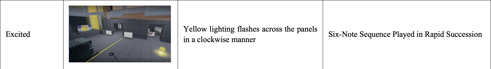
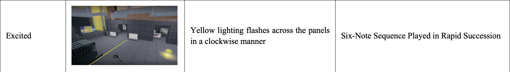

Project
Human-AI co-design in VR
Investigating Socially Interactive Virtual Environments as a Design Partner üîÆ
Categories
Architecture | Research

Organisation
Role
Co-investigator
Other Researchers
· Asst. Professor Wang Yixiao (PI, Advisor)
· Ho Jin Teck Daryl (ASD Ph.D.)
Other Collaborators
· Formaxioms Lab (SUTD)
· Asst. Professor Carlos Aguiar (UIUC)
Duration
June 2022 - Present
Background
Metaverse technology is progressing rapidly in the past few years. In the near future, metaverse could become online community spaces where people play, communicate, meet, shopping, work, relax, etc. We could easily foresee virtual spaces, villages, or even cities being developing by online communities through a “bottom-up” approach, as if how villages or even cities in physical space were generated historically. Since most users are not professionally trained designers, design consultation and assistances will be needed. What if the metaverse itself is an AI-embedded design partner or consultant? This is where our project comes in.
Abstract
How do people perceive and interact with a Socially Interactive Virtual Environment (SIVE) that is developed as an intelligent, virtual, and spatial agent in the co-design process, or more specifically, a “Space Agent” design partner? How will these perceptions and interactions shape the human-SIVE co-design? Here, SIVE refers to AI-embedded virtual environments that can interact and collaborate with human users in a socially expressive way, and “Space Agent” refers to a socially expressive AI system with a spatial embodiment (e.g., a smart room, office, public space, etc.). This paper explores the intricate partnership between human users and SIVE through empirical studies. We aim to gain a preliminary understanding of how users perceive and engage with SIVE in the design process. Harnessing Unreal Engine, we designed and developed a virtual environment that used various visual and auditory modalities to interact with users and employed the Wizard-of-Oz (WoZ) technique to conduct in-lab experiments with 10 participants. The participants' perspectives and interactions were video recorded, and then carefully reviewed and analyzed by multiple researchers. A semi-structured interview was also conducted with each participant after the WoZ experiment, with the transcripts analyzed through the grounded theory coding technique. By examining these qualitative data, we aim to uncover valuable insights into the dynamics between human users and SIVE during the co-design process. The findings of this study contribute to a deeper understanding of the potential benefits and challenges associated with integrating SIVE into collaborative design practices and have the potential to shape the future of human-AI design partnerships and co-creations, offering guidance for designers, developers, and researchers seeking to leverage the unique capabilities of SIVE as a design partner.
Related Works
The next section will be introducing four bodies of literature relevant to the discussion.Digital Tools in VR
Digital tools have become increasingly prevalent within design-related communities. These design tools afford exploration into novel media that goes beyond the traditional pen-and-paper medium in the design process and empowers individuals to express their ideas in easier and more creative ways. Within the context of social VR and metaverse-related applications, an emerging field of literature has begun to explore the implementation of such design tools that allow users to design their own environments [9] in VR. The ability for users to design their own environments ties back to the notions of placemaking introduced by Dourish [10], whereby place is defined not by its physical characteristics, but rather by how users appropriate the space towards their own goals. The same notion could arguably apply to virtual environments in VR as well. Interviewing existing users of social VR platforms, Mcveigh-Schultz et al. [11] highlight how users make use of meaning found within virtual environments to set social expectations, such as employing a campsite as a signifier for communal gathering and discussion.Apart from the visual characteristics of virtual environments, design tools also relate to the interaction design of the environments. These tools can be classified under the field of interaction authoring, which explores ways in which users are able to define the interactive elements of the environment without scripting [7, 8, 9]. Interaction authoring tools relate to users’ capacity for action within these virtual environments and look towards granting end-users more agency to shape their virtual environments in line with their own goals, allowing for more dynamic social interactions and cultural practices to emerge from these platforms rather than have them prescribed top-down by developers. However, the effectiveness of such design tools is largely predicated on the design of the tools themselves and often forgo any form of design feedback beyond the functionality of the interface [12]. The paper thereby goes beyond the paradigm where VR is only a platform of interaction authoring tools to explore smart VR as a socially interactive design partner in the human-VR co-design process.
Understanding Co-design
Co-design refers to the process of collaborative design thinking whereby actors work jointly to explore, evaluate, and develop solutions to design problems [13]. As this process involves the communication and synthesis of various individual perspectives and goals toward the design objective, co-design can be seen as an inherently social activity. Within existing literature, co-design is employed in many contexts. For instance, co-design can be employed to integrate different fields of technical expertise and knowledge, particularly within the engineering field whereby the design output is multi-disciplinary by nature [14]. Alternatively, co-design can also be understood as a means to engage and give agency to communities and end-users in the design process, particularly when these communities have a vested interest in the design output. This is prevalent in the realm of public policy and planning, whereby affected communities without domain expertise can contribute to the design process based on their feedback and experience [15, 16]. Likewise, within the context of social VR, users oftentimes are placed into environments that are pre-defined both spatially and in terms of interactivity, thereby limiting the scope of actions that the user can enact [17]. Co-design offers a possibility allowing these users with no technical knowledge to have a part in shaping their environment and the interactions found within it.Co-design in VR
Existing approaches to co-design in VR tap into the medium's ability to simulate co-presence among users of shared virtual spaces [18]. These approaches typically manifest through multi-user spaces whereby several embodied users can communicate, collaborate, and employ specific tools catered to the design task [19]. These systems address the social nature of co-design, particularly the interaction between human actors within the virtual space and how certain authoring tools might help facilitate the design process. However, existing research looking into co-design methods in VR typically addresses discipline-specific forms of design such as within the field of architecture [20] or industrial design [21]. Employing co-design methods toward the design of the VR environments themselves appears to be an underexplored topic within VR research, despite its relevance to social VR and metaverse applications. In addition, existing research on VR co-design primarily focuses on interactions and collaborations among human actors [22, 23, 24, 25, 26]. As the next section seeks to illustrate, an emerging field has begun to explore possible forms of human-environment interaction in which new forms of social interaction and co-design can be conceived.Socially Interactive Virtual Environments (SIVE) as a “Space Agent” design partner
Novel work has been done within the fields of social robotics on the design of interactive agents that respond to users in a socially expressive way while complementing the activities of the user. These works range from designing standalone elements such as robotic furniture [27] and telepresence robots [28] to more spatialized interventions that integrate with the environment at an architectural scale [29]. In relation to co-design, researchers [30] have proposed a framework for the design of collaborative environments as a design partner to foster joint actions and creativity. Such collaborative environments are further defined as an exemplar of “Space Agent,” an interactive or intelligent artifact that is both environmental (i.e., space-making) and human-like in (at least some of) its behaviors [30, 31, 32]. While these works largely relate to the physical scale, the use of virtual reality as a medium presents new opportunities to explore new forms of human- “Space Agent” interactions unconstrained by the practical limitations found within the field of robotics.This study thereby proposes the implementation of SIVE, which can dynamically interact with users in a socially expressive manner through environmental feedback. SIVE also investigate the potential of intelligent environments that integrate artificial intelligence to interact with the users of the space [33, 34]. Rather than co-design between human actors, SIVE present an opportunity to understand how co-design might manifest between human actors and a non-human, socially interactive environment.
Methodology
This preliminary study addresses the following research questions:Q1. How do users perceive socially intelligent VR environments during co-design, and why?
Q2. How do users interact with socially intelligent VR environments in the co-design process, and why?
Q3. How does the human-SIVE interaction shape the design processes, and why?
Experiment Design
Firstly, Study I was conducted with 5 participants to examine and identify key usability issues of the authoring tools (the VR interfaces through which users create their own spatial designs. See section 4.1 for further explanations). On top of that, participants also provided their responses regarding the socially expressive feedback provided by the SIVE during the co-design process, particularly how the sounds and lights triggered by SIVE were perceived. The data gathered was then used to inform the final design of the SIVE used for the actual user study.
Study II involved 10 participants, investigating the user perception of and interaction with the VR environment in the design process. Each participant took part in two sessions across a week whereby they experienced both the experiment condition (human-SIVE co-design) and the control condition (the participant designs in the VR environment that only provide authoring tools with no design suggestion or environmental feedback). More specifically, in the experiment condition, the participant interacted with the VR environment through the authoring tools and received design suggestions from the environment in a socially expressive manner (see section 4.2); while in the control condition, the participant could only use the authoring tools without any environmental or design feedback.
Through having each participant experience both conditions in a randomized order (a within-subject study), this experiment seeks to observe the effect of the SIVE and its associated environmental feedback on the individual’s design process as compared to the controlled scenario where the VR only serves as a design tool.
In both cases, participants are given the same brief to design a virtual open house for a school using the authoring tools provided. When conducting the exercise in the SIVE, participants were informed that the VR environment would try to provide design suggestions and interactions with the environment were encouraged. The session started with a 10-minute onboarding of the controls of VR authoring tools, followed by 20 minutes of the “open-house design” activity. During the session, participants were also encouraged to think aloud [36] as they went about the design activity, with both audio and screen recordings captured for the following interaction analysis [37] and grounded theory coding [38].
After the design activity, a semi-structured interview was conducted to understand the participant’s perception of the interactive elements in both control and experiment conditions, as well as their responses to both the social feedback and design suggestions provided by the SIVE. These questions include:
1. Describe your experience of interacting with the VR environment.
2. Did the VR interactions prompt you to change your design intention or actions?
3. Did the VR interactions change the way you behave in the space?
The interview transcripts complemented the video recordings of the co-design activity, allowing us to better interpret the role of the SIVE in the co-design process. At the end of each session, a $10 voucher was given to each participant.
Interaction Analysis through Videos
Interaction video analysis is a well-established method for examining ethnographic videos [37]. This method boasts its advantage in objectivity, which is achieved by multiple researchers collaboratively viewing and interpreting the videos. Additionally, the feasibility of repeatedly analyzing the same footage allows for the identification of previously unapparent phenomena. By utilizing this method, we transcribed the key video clips of human-VR interaction into transcripts for in-depth analysis through grounded theory coding.Grounded Theory Coding
We employed the Grounded Theory Coding technique to code and analyze all transcripts from the video analysis and interview audio recordings given the explorative nature of this study, following the four-step approach [38]: 1) initial coding, 2) focused coding, 3) axial coding, and 4) theoretical coding.Interaction Design of the Socially Intelligent Virtual Environment (SIVE) as a Design Partner
To address the research questions stated earlier, a Socially Interactive Virtual Environment (SIVE) was designed and developed as a design partner with two aspects in mind: 1) VR Authoring Tools (see section 4.1) were developed to allow users to intuitively construct and manipulate not only the spatial components in the VR environment but the interactivity of these components. 2) Social interaction features were embedded in the interaction design of SIVE, addressing the environmental feedback (see section 4.2). As participants engage in design activities through VR authoring tools, the SIVE responds dynamically as a design partner through environmental feedback.Authoring Tools
Authoring tools refer to the interfaces that users can use to construct and manipulate the VR environment and interactions embedded in the VR environment [7, 8, 9].In this project, a voxel-based system was implemented, enabling users to construct spaces by aggregating voxel geometry. This approach draws inspiration from popular sandbox-style video games like Minecraft, where players employ voxels as fundamental building blocks to shape their creative output in an open-ended manner. In this system, users can place tiles and blocks within a 1-meter grid coordinate as a means of constructing VR space. Furthermore, users have the freedom to manipulate, scale, and rotate these spatial components together with the other objects found within the VR space pertaining to the study.
On top of this, another type of authoring made available to the user comes in the form of interaction authoring. Given the interactive nature of VR environments, the design of these environments is not limited to the spatial components, but also how these elements might relate with each other and the users. For this study, users can thereby construct the interactivity of the spatial components found in the environment through two steps: first, define a trigger that executes the interaction, followed by the resultant action triggered by the user. To complement the use of VR and the nature of the design activity, two modes of trigger (touch and gaze) and three possible actions (teleport, toggle visibility, and play sound) were made available to the participants of the study, as seen in Figures 2 and 3.

These interaction authoring tools are further illustrated in Table 1. To make such interactions perceptible to the participant, objects embedded with interaction are color-coded according to the type of trigger assigned to them.

 Table 1 Triggers and actions defined in the interaction authoring system
Table 1 Triggers and actions defined in the interaction authoring systemSocially Expressive Environmental Feedback
SIVE incorporated immersive environmental feedback that manifested through visual and auditory elements, responding to users' design actions and verbal expressions during the design process. This socially expressive feedback was simulated using the Wizard-of-Oz technique [35].As this study serves as a pilot, the very first step to assess the viability of SIVE and “space agent” concept in the co-design activities, we took a cautious and progressive approach in the SIVE design where agency is not solely ascribed to the VR environment. Instead, agency is distributed between a virtual agent, embodied by a luminous sphere (Figure 10), and the socially expressive VR environment. The glowing sphere functions as a guiding entity, orchestrating the spatial reconfigurations that offer design suggestions to users. In addition, the social expressiveness of the virtual agent sphere is enhanced through environmental feedback channels facilitated by the semi-space agent. In this way, both the space agent (the VR environment) and the virtual agent (the luminous sphere) complement and augment each other as an integrated whole to fulfill the role of a design partner. In the human-SIVE interaction process, two different types of environmental feedback were designed, namely social feedback and design feedback.
Environmental Feedback relates to the dynamic interactions of the environment in response to the user's actions in the SIVE. These interactions can be classified into two categories: firstly, social feedback that aims to give a social personification to the SIVE that responds to human interaction, followed by design feedback that relates to ways in which the environment can provide design suggestions as a design partner. The integration of both social and design feedback ties back to the novel nature of the SIVE, whereby the study explores the relationship between the social expressiveness of the environment and the human-VR co-design process.
Social feedback is manifested within the SIVE in four different states: agreement, disagreement, excitement, and inquisitiveness. To express these states with social expressiveness (e.g., emotions such as happy, unhappy, excited, and curious), an array of panels was placed within the SIVE to surround the user as they partake in the design activity. These panels emit a specific sequence of colored lights and sound corresponding to the state that is activated. The design of the lights and sounds in relation to each social feedback state was iterated through user feedback.
 
Table 2 Different states of social feedback in the SIVE and their associated visual and auditory elements

Table 2 Different states of social feedback in the SIVE and their associated visual and auditory elementsDesign feedback, on the other hand, is manifested through the environment’s ability to proactively place blocks and make corrections to the existing elements within the space. Such feedback can be triggered in response to the user’s design actions and speeches. These changes made by the SIVE are color-coded purple, with users given the choice to either accept or reject the provided design suggestions.
The two primary ways design feedback materialize are in terms of spatial guides and building suggestions as seen in Figures 4 and 5. Spatial guides aid users in designing spaces that are intuitive and have high spatial clarity such that visitors of the virtual space can easily navigate through the environment and locate points of interest or specific destinations. For this type of design feedback, users can either choose to build blocks or highlights within, on, or along the demarcated section, or they can just ignore the suggestion, and it would disappear after a while.
 Fig. 4 Ground indicators that act as “spatial guides”
Fig. 4 Ground indicators that act as “spatial guides” Fig. 5 Proposing suggestions by “building blocks”
Fig. 5 Proposing suggestions by “building blocks”On the other hand, “building blocks” help users design specific structures or part of structures to showcase assets or serve as focal points of the virtual open house. For this type of design feedback, users can either choose to accept or reject it by pressing a button, or just ignore it and then it will disappear after a while. If users accept it, the suggestion will materialize in the form it was suggested, and users can follow-up on the suggestion by adding or deleting certain elements to refine it to a state they prefer.
Notably, social feedback and design feedback are not separated. In SIVE, they are coordinated with each other to give users environmental feedback in a socially expressive manner. For instance, when users are making poor design decisions, the SIVE could give social feedback of disagreeing with the current design decision (Table 2), followed by design feedback to improve on users’ current designs (Figures 4 and 5).
Lastly, it is noted that while the social and design feedback should ideally be enacted through AI in the SIVE, we employed the Wizard-of-Oz technique [35] in this study where a human researcher plays the role of a socially intelligent AI to give socially expressive feedback and design suggestions to the participant. This method has been widely used in the early exploration of complex, socially intelligent AI systems (e.g., social robots) to gather user feedback on the desired behavior of the social agent. We use this method for our preliminary exploration of the complex social interactions between human designers and SIVE in the co-design process.